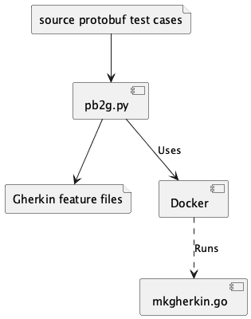

Development Tools¶
The development effort is dependent on several parts of the CEL project.
The language specification. https://github.com/google/cel-spec/blob/master/doc/langdef.md
The test cases. https://github.com/google/cel-spec/tree/master/tests/simple/testdata
The language specification is transformed into a Lark grammar.
This is in the src/cel.lark file.
This changes very slowly.
Any changes must be reflected (manually) by revising the lark version of the EBNF.
The test cases present a more challenging problem.
A tool, pb2g.py, converts the test cases from Protobuf messages to Gherkin scenarios.

The pb2g Tool¶
The pb2g.py Python application converts a protobuf test case collection into a Gherkin Feature file.
These can be used to update the features directory.
SYNOPSIS¶
- -g <docker | local>, --gherkinizer <docker | local¶
Sets the method for converting the Protobuf messages to interim JSON documents. Either a local Go binary can be run, or a Docker image, using the
tools/Dockerfilecan be run. Using-g dockerrequires installing Docker (https://www.docker.com)Using
-g localrequires a local version compiled for your platform. Install the Go tools (https://go.dev/learn/) and compiletools/mkgherkin.go.Docker is the default.
- -o <output>, --output <output>¶
Where to write the feature file. Generally, it’s helpful to have the
.textprotoand.featurestems match. TheMakefileassures this.
- -s, --silent¶
No console output is produced
- -v, --verbose¶
Verbose debugging output on the console.
- source¶
A source
.textprotofile. This is often the path to a file in a local download of https://github.com/google/cel-spec/tree/master/tests/simple/testdata.A URL for the source is not supported.
DESCRIPTION¶
Convert one .textproto file to a Gherkin .feature file.
There are two steps to the conversion:
Rewrite the
.textprotointo JSON. This relies on common Go libraries, and is little more than a syntactic conversion.Rewrite the JSON copy of the
.textprotointo Gherkin. This a little more fraught with special cases and exceptions. The.textprotosemantics can be confusing.
FILES¶
- source:
A
.textprototest case file from the CEL-spec repository.- output:
A
.featurefile with the same stem as the source file is written to the output directory.basic.textprotowill createbasic.feature.- interim:
An interim JSON-format file is created and deleted. These are only visible in the event of a fatal error creating the Gherkin output.
EXAMPLES¶
The basic.textproto starts like this:
name: "basic"
description: "Basic conformance tests that all implementations should pass."
section {
name: "self_eval_zeroish"
description: "Simple self-evaluating forms to zero-ish values."
test {
name: "self_eval_int_zero"
expr: "0"
value: { int64_value: 0 }
}
test {
name: "self_eval_uint_zero"
expr: "0u"
value: { uint64_value: 0 }
}
The Feature file created looks like this:
Feature: basic
Basic conformance tests that all implementations should pass.
# self_eval_zeroish -- Simple self-evaluating forms to zero-ish values.
Scenario: self_eval_int_zero
When CEL expression "0" is evaluated
# int64_value:0
Then value is IntType(source=0)
Scenario: self_eval_uint_zero
When CEL expression "0u" is evaluated
# uint64_value:0
Then value is UintType(source=0)
The source files have a “section” heading which doesn’t have a precise parallel in the Gherkin language. The sections become comments in the Feature file.
The features/steps directory has step definition modules that implement the Given, When, and Then clauses.
Provides step definitions for the c7n_interface.feature.
This is not part of the CEL language specification.
Provides step definitions for the expr_test_bc.feature, json_query.feature, neither of which are part of the CEL language specificaiton.
Provides step definitions for the features generated by the pb2g.py tool.
The features/Makefile¶
This Makefile has the following targets:
- %.textproto:
This copies textproto files from the source directory to the
featuresdirectory. The source is defined by theCEL_SIMPLE_TESTDATAenvironment variable. This will overwrite out-of-date files in thefeaturesdirectory.It’s important to use git wisely and start with a clean branch of the project so changes can be rolled back.
- %.feature:
This creates the
.featurefile from the.textprotofile.- scan:
This phony target reads all of the
.textprotofiles to be sure they can be converted to Gherkin. If it concludes with the output"All files scanned successfully", then there are no surprising or unexpected features in the.textprotofiles.- clean-broken:
This phony target removes empty
.featurefiles that may be left over when the conversion process crashes with a fatal error.- clean-features:
This phony target removes all of the
.textproto-based.featurefiles. Manually created.featurefiles are left intact.- clean:
This phony target removes all
.textprotoand.featurefiles that are built from the CEL specification. Manually created.featurefiles are left intact.
Currently, the following feature files are built from the CEL specification.
basic.feature
comparisons.feature
conversions.feature
dynamic.feature
enums.feature
fields.feature
fp_math.feature
integer_math.feature
lists.feature
logic.feature
macros.feature
namespace.feature
parse.feature
plumbing.feature
proto2.feature
proto3.feature
string.feature
timestamps.feature
unknowns.feature
The docs/Makefile¶
This is a Sphinx Makefile to build documentation.
For more information, see https://www.sphinx-doc.org/en/master/index.html
The Project Makefile¶
A top-level Makefile has a number of phony targets:
- build:
Runs
uv buildto create a distribution kit.- install-tools:
Pulls a
golangDocker image and builds themkgherkinimage.- test:
Runs the Python 3.12 test environment to execute a quick test.
- test-all:
Update the
featuresfiles and run the full test suite.- test-wip:
Update the
featuresfiles and run the WIP test environment – these are tests flagged with @WIP markers.- test-tools:
Run a test of only the tools, then scan the
featuresfiles to be sure they’re still valid after the tool change.- docs:
Build the HTML documentation.
- lint:
Runs the
linttest environment to get code coverage, type hint checking, and other lint checks.- coverage:
Reproduce the most recent coverage report.
- clean:
Remove a number of directories and their files:
.tox.Pythonbinincludelibpip-selfcheck.json
- benchmarks:
Run the applications in the
benchesdirectory to gather performance benchmark data.large_resource_set.pycomplex_expression.py